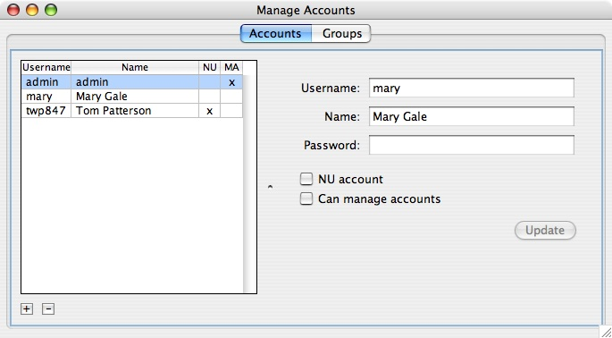
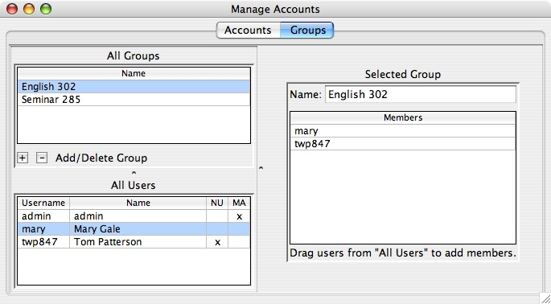

|
|
|
This chapter is for WordHoard system administrators who are responsible for creating and managing accounts on the system. Other people should feel free to skip this chapter.
To manage accounts, you must log in, and your account must have the "can manage accounts" privilege. Use the "Manage Accounts" command in the "File" menu:
The "Manage Accounts" window contains two panes, one for managing User Accounts and the other for managing Groups. We will first describe the pane for managing Accounts.

The table on the left shows all the accounts on the system, in alphabetical order by username.
The "NU" column is checked if the account is an Northwestern University account, in which case the username is the user's Northwestern University netid.
The "MA" column is checked if the account has the "can manage accounts" privilege. Accounts with this privilege may also view, edit, or delete any user annotation.
In the example above, there are three accounts. One of them is an NU account, and the other two are non-NU accounts. One of the accounts has the "can manage accounts" privilege, and the other two do not.
To create a new account, click the plus button in the bottom left corner, fill in the fields and options on the right, and click the "Create" button in the lower right corner. For NU accounts, set the username to the netid and leave the password field empty - the system will use the NU netid password in this case. For non-NU accounts, assign both a username and a password.
To modify an account, select it in the table, make the changes on the right, and click the "Update" button in the lower right corner.
To delete an account, select it in the table and click the minus button in the bottom left corner.
Groups are useful for managing access to private resources, such as annotations. When a user creates an annotation they can allow or prevent its access for any Group in which they are a member. This is the administrator's interface for creating Groups and managing their membership.

The pane on the left shows two tables. The top table shows all the groups in the system. The bottom table shows all the accounts in the system. The pane on the right contains the group editor for the selected group.
In the example above, there are two groups: "English 302" and "Seminar 285". "English 302" is selected. Its editable name and membership are shown on the right.
To modify a group, select it in the list of groups in the upper left. Its name and membership will appear in the group editor on the right. Its name can be changed by entering a new one and hitting 'return'. New members can be added by dragging them in from the user list on the left. Members can be removed by selecting them and hitting the 'delete/backspace' key.
To create a new group, click the plus button in the bottom left corner of the Groups table, fill in the group name on the right, and hit 'return'. Add members to the group by dragging users from the user table on the left to the members table on the right.
To delete a group, select it in the upper left table and click the minus button in its bottom left corner.
|
|
|